Quel que soit votre métier, votre culture, nous saurons trouver la solution qui vous correspond le mieux. Celle qui vous fait gagner en productivité et en efficacité, sans mettre en péril votre quotidien, en respectant votre identité, vos contraintes de coûts et de délais, et en générant l’adhésion des utilisateurs. Depuis 20 ans, nous sélectionnons des outils et des technologies, pour leur fiabilité et leur adéquation aux besoins de nos clients dans des domaines très divers : CRM, SAV/HelpDesk, gestion de projets, de processus, de ressources, planification et toutes sortes de solutions métier collaboratives.
Depuis 20 ans, nous nous efforçons de mettre l’innovation informatique au service immédiat des entreprises.
Nos partenaires
En 20 ans, à travers les différentes marques distribuées et les solutions mises en œuvre nous avons touché une population très large d’entreprises et d’organisations diverses dont voici un échantillon.


 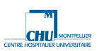
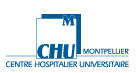

 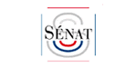
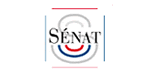


 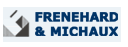
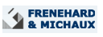


 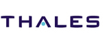
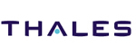
 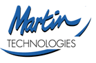
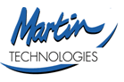

 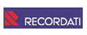
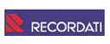

 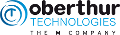
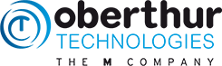

Avis Clients
TopSys
"TopSys gère tout les encours client avec Commence"
Thales
"Commence améliore la circulation de l'inforamtion chez Thales Navigation"
Sénat
"Le sénat choisit la solution logicielle Commence pour gérer l'agenda du Président"
ONU
"Le sénat choisit la solution logicielle Commence pour gérer l'agenda du Président"
Oberthur
"Les commerciaux d'OBERTHUR optimisent leur gestion avec Commence"
Frénéhard & Michaud
"Commence, un outil complet pour Frénéhard & Michaud"
Canal de provence
"Commence, une 'boite à outils' pour le Canal de Provence"

Wago
"Quand le CRM profite à tous les collaborateurs"

Bravo solution
"Commence accompagne le développement de BravoSolution"

CFDP
"Commence assure la transmission de l'information à la CFDP"

EGH
"EGH gère toute sa clientèle avec Commence..."